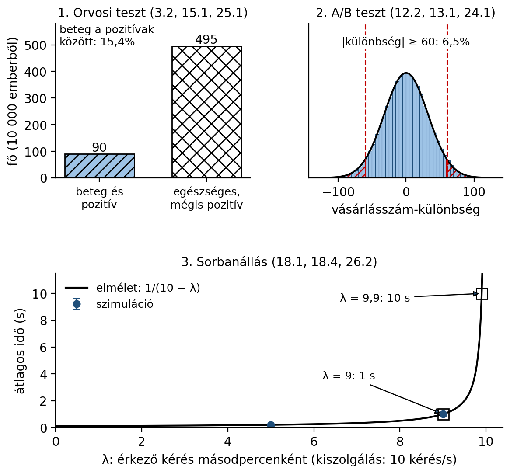
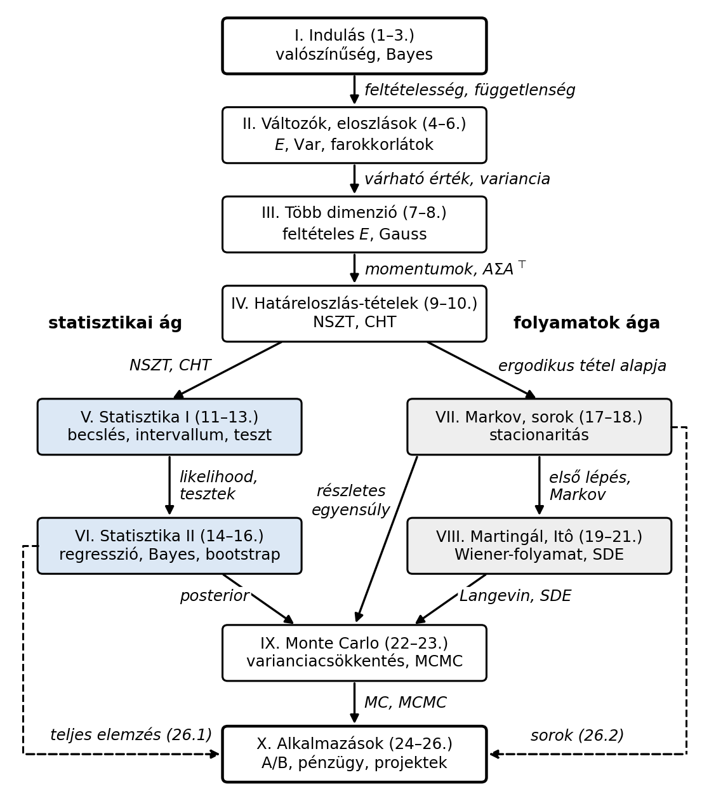
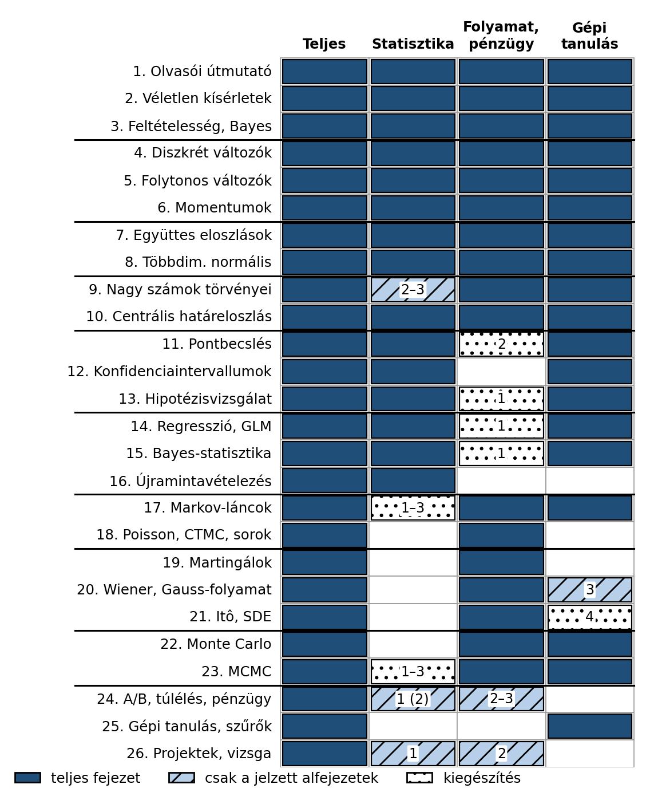
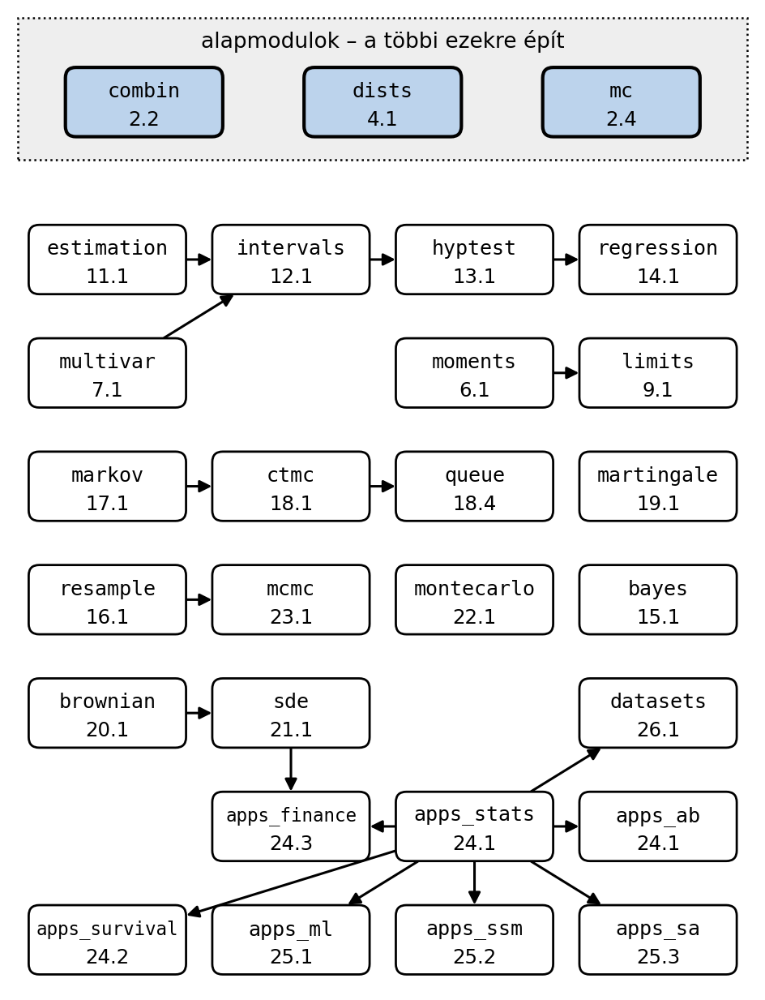

Három hétköznapi helyzettel indulunk. Mindhárom válaszolható, de egyik sem puszta józan ésszel. A számok mindenhol kitalált, szemléltető értékek.
Az orvosi teszt. Egy betegség a népesség 1%-át érinti. A szűrőteszt a betegek 90%-ánál pozitív, az egészségeseknek pedig 95%-ánál negatív. Valakinek pozitív lett a lelete. Mekkora eséllyel beteg? Sokan 90% körüli értéket mondanak, pedig a helyes válasz nagyjából 15%. Képzeljünk el 10 000 embert: 100 beteg, közülük 90 kap pozitív leletet. A 9900 egészséges 5%-a, azaz 495 ember szintén pozitív. A 585 pozitív leletből tehát csak 90 tartozik beteghez. A kérdés arról szól, hogyan írjuk le a bizonytalanságot, és hogyan változik, ha új információt kapunk.
Az A/B teszt. Egy webáruház a látogatókat véletlenszerűen két csoportra osztja. A régi oldalt (A) 10 000 látogató látja, közülük 520 vásárol; az újat (B) szintén 10 000, közülük 580. A B változat 0,6 százalékponttal jobbnak látszik. Valódi javulás ez, vagy a véletlen ingadozása, amely két egyforma oldal között is előfordulna? Itt adatból következtetünk.
A szerver sora. Egy kiszolgáló átlagosan 10 kérést tud elintézni másodpercenként, és átlagosan 9 érkezik, véletlenszerű időközökkel. Mennyit tölt egy kérés a rendszerben? És ha a terhelés 9,9 kérésre nő? Egyszerű modellben az első esetben átlagosan 1 másodpercet, a másodikban már 10-et: 10% többletforgalom tízszeres várakozást okoz. Itt az időben fejlődő véletlent modellezzük.

Az ábra bal felső paneljén a téves riasztások oszlopa sokszorosa a valódiakénak. A jobb felsőn látszik, hogy két azonos oldal között is gyakran adódik néhány tíz vásárlásnyi eltérés; a megfigyelt 60 a szélső tartományban van, de nem elképzelhetetlen. Az alsó görbe a teljes kihasználtság felé függőlegesbe fordul.
A könyv ezt a három szálat viszi végig. Az orvosi teszt a A Bayes-tétel és a diagnosztikai következtetés alfejezetben kap teljes megoldást, majd paraméterbecslésként (Prior, likelihood, posterior és a konjugált párok) és spamszűrőként (Valószínűségi gépi tanulás: veszteség mint log-likelihood és az EM-algoritmus) tér vissza. Az A/B tesztből előbb intervallum és próba lesz, később szekvenciális elemzés és bandit (A/B tesztelés és többkarú banditák). A szerver sorát a A Poisson-folyamat alapozza meg, a A sorbanállás alapjai oldja meg, és a Záróprojekt B: sztochasztikus rendszer modellezése és szimulációja bővíti teljes rendszermodellé. Ezekhez csatlakozik még a szerencsejátékos csődje, a részvényárfolyam és a logisztikus modell posteriorja.
A tíz rész egymásra épül: előbb a véletlen leírása, aztán a belőle levont következtetések, végül a folyamatok és a számítási módszerek.

| Rész | Fejezetek | Vezérkérdés |
|---|---|---|
| I. Indulás | 1–3. | Mi a valószínűség, és hogyan frissül? |
| II. Változók, eloszlások | 4–6. | Hogyan írunk le véletlen számot? |
| III. Több dimenzió | 7–8. | Hogyan függenek össze a mennyiségek? |
| IV. Határeloszlás-tételek | 9–10. | Mi történik sok megfigyelésnél? |
| V. Statisztika I | 11–13. | Mit mond az adat a paraméterről? |
| VI. Statisztika II | 14–16. | Modellek, Bayes, újramintavételezés |
| VII. Markov-láncok, sorok | 17–18. | Hogyan fejlődik a véletlen rendszer? |
| VIII. Martingálok, Itô | 19–21. | Mi a folytonos idejű véletlen mozgás? |
| IX. Monte Carlo | 22–23. | Hogyan számolunk mintavétellel? |
| X. Alkalmazások | 24–26. | Hogyan áll össze a teljes elemzés? |
A számozás a nyomtatott könyvet követi: a 3.2 a 3. fejezet második alfejezete. A szövegben a hivatkozások mindig a cél pontos címével szerepelnek, hogy a nyomtatott és a böngészős kiadásban is megtalálhatók legyenek.
Egy bekezdés a történetről: a valószínűség matematikai tárgyalása a 17. századi szerencsejáték-kérdésekből nőtt ki (Pascal és Fermat 1654-es levelezése), a ma használt axiomatikus alapot pedig Kolmogorov fektette le 1933-ban. A könyv ezt az alapot a 2. fejezetben építi fel, szemléletesen.
A könyv minden fogalmat négy módon mutat be:
szemléletben (ábra, animáció),
képletben (levezetéssel), kódban (a
kísérő probkit csomaggal) és szimulációs
ellenőrzésben. Az utolsó azt jelenti, hogy amit a matematika
állít, azt a számítógépen is lejátsszuk sokszor, és megnézzük,
egyezik-e.
A legegyszerűbb eset egy esemény valószínűsége. Végezzük el a véletlen kísérletet -szer, és számoljuk, hányszor következett be . A relatív gyakoriság és a becslés bizonytalanságát mérő standard hiba (SH):
Itt értéke 1, ha az -edik kísérletben bekövetkezett, különben 0. Szavakban: a becslés a sikerek aránya, a bizonytalansága pedig a mintaszám négyzetgyökével arányosan csökken. Ha a becslés a számított értéktől néhány standard hibán belül van (a tesztekben legfeljebb 4-en), az elmélet és a kísérlet egyezik. Ha messze van tőle, valahol hiba van: a képletben, a modellben vagy a kódban. A képletek indoklását a Relatív gyakoriság és szimuláció: a valószínűség kísérleti oldala adja meg; most elég látni a mintát. Ezt a könyv végig így nevezi: „szimulálj, mielőtt hiszel”.
Ellenőrizzük a három nyitó kérdést. A teszthez egymillió embert generálunk. Az A/B teszthez feltesszük, hogy a két oldal egyforma, mindkettő 5,5%-os vásárlási eséllyel (ez a két megfigyelt arány átlaga), és azt kérdezzük, mekkora eséllyel tér el a két vásárlásszám legalább 60-nal. A sorhoz 20 független futásban 20 000 egymás utáni kérést játszunk le; egy kérés várakozása az előző kérés várakozásából és kiszolgálási idejéből adódik, ha ebből levonjuk a két érkezés között eltelt időt (negatív várakozás helyett nulla).
import sys
sys.path.insert(0, "code")
import numpy as np
from probkit import dists, mc
rng = np.random.default_rng(2026)
# 1. Orvosi teszt: P(beteg | pozitív)
prev, sens, spec = 0.01, 0.90, 0.95
ppv = prev * sens / (prev * sens + (1 - prev) * (1 - spec))
sick = rng.random(1_000_000) < prev
u = rng.random(1_000_000)
positive = np.where(sick, u < sens, u < 1 - spec)
print(f"teszt elmélet {ppv:.4f} szimuláció {mc.mc_mean(sick[positive])}")
# 2. A/B teszt: P(|X - Y| >= 60), ha mindkét arány 0,055
n, p0 = 10_000, 0.055
pmf = dists.Binomial(n, p0).pmf(np.arange(n + 1))
exact = 2 * np.sum(pmf[60:] * np.cumsum(pmf)[:-60])
diff = rng.binomial(n, p0, 200_000) - rng.binomial(n, p0, 200_000)
print(f"A/B elmélet {exact:.4f} szimuláció {mc.mc_mean(np.abs(diff) >= 60)}")
# 3. Sor: átlagos tartózkodási idő (várakozás + kiszolgálás)
def mean_time(lam, mu, rng, customers=20_000, warmup=2_000):
gap = rng.exponential(1 / lam, customers).tolist() # érkezési időközök
serve = rng.exponential(1 / mu, customers).tolist() # kiszolgálási idők
wait, total = 0.0, 0.0
for k in range(1, customers):
wait = max(0.0, wait + serve[k - 1] - gap[k])
if k >= warmup:
total += wait + serve[k]
return total / (customers - warmup)
for lam in (5, 9):
runs = [mean_time(lam, 10, rng) for _ in range(20)]
print(f"sor {lam} elmélet {1 / (10 - lam):.4f} szimuláció {mc.mc_mean(runs)}")teszt elmélet 0.1538 szimuláció 0.153635 ± 0.0015 (SH, n=58613)
A/B elmélet 0.0650 szimuláció 0.06495 ± 0.00055 (SH, n=200000)
sor 5 elmélet 0.2000 szimuláció 0.200164 ± 0.00076 (SH, n=20)
sor 9 elmélet 1.0000 szimuláció 1.01712 ± 0.038 (SH, n=20)Mindhárom becslés a hibasávon belül van az elméleti értéktől. Figyeljük meg, mekkora a standard hiba a sornál nagy terhelés mellett, a 20 000 kérés ellenére is: az egymás utáni várakozások erősen függnek, ezért sok adat is kevés új információt hordoz. Ezért ismételtük meg a teljes futást 20-szor, és a futások átlagaiból számoltuk a hibát.
Az A/B kérdés számai azt jelentik: két teljesen egyforma oldal is kb. 6–7%-os eséllyel produkálna ekkora vagy nagyobb eltérést. Hogy ezt bizonyítéknak tekintsük-e, arról a A tesztelés kerete: hibafajták, p-érték, erő ad szabályt, és az is kiderül, miért nem mondhatjuk, hogy „94% eséllyel jobb a B”.
A 2–25. fejezet alfejezetei ugyanazt az utat járják be, így tudja, mit hol keressen.
A Továbbvitt eredmény feliratú bekezdések jelzik, mit fogunk még használni. Ha egy későbbi fejezetben elakad, ezeket érdemes visszakeresni. Az alapigazságokat nem vezetjük le újra, hanem hivatkozunk rájuk, és a visszatérő gondolatmeneteknek nevet adunk (például „indikátorra bontás” vagy „a feltétel szűkíti az eseményteret”).
Egy alfejezet feldolgozása jellemzően két-három óra. Érdemes így haladni. Először olvassa el a motivációt, és tippelje meg a választ, mielőtt továbbmegy; a rossz tipp is hasznos, mert megmutatja, hol csal a szemlélet (az orvosi tesztnél ez a legtöbb ember tapasztalata). A formalizmusnál minden tételnél kérdezze meg, melyik feltételt használja a bizonyítás, és mi történne nélküle. A kézi számpéldát számolja ki papíron, majd vesse össze a kód kimenetével. A szimulációs ellenőrzésnél változtassa meg a magot: a becslés módosul, de a hibasávon belül kell maradnia. Végül a feladatokból legalább egy B és egy C szintűt oldjon meg önállóan.
Egy fejezetet akkor érdemes lezárni, ha az önellenőrző kérdések legalább 80%-ára helyesen válaszol, és legalább egy C szintű feladat elkészült. A részletes ellenőrző pontokat a kompetenciatérkép függelék sorolja fel.
Feltételezett ismeretek: középiskolai algebra és kombinatorikai alapok; egyváltozós derivált és integrál (helyettesítés, parciális integrálás), mértani és hatványsor, Taylor-polinom; vektor, mátrix, mátrixszorzás, transzponált; Python-kód olvasása és a NumPy alapjai. Valószínűségszámítást és statisztikát nem feltételezünk. A Tanulási útvonalak és belépő teszt megmutatja, hol érdemes ismételni.
Menet közben megtanított eszközök (csak annyi, amennyi a megértéshez kell): kettős integrál és Jacobi-determináns, pozitív definit mátrix és Cholesky-felbontás, sajátérték-szemlélet, mátrixexponenciális, komplex exponenciális, a σ-algebra és a „majdnem biztosan” szemléletes jelentése. A mértékelméleti szigort nem követeljük meg; ahol jelentősége van, egy „Mélyebben” bekezdés utal a megfelelő könyvre [S-MERTEK].
Alapozáshoz a Kalkulus és analízis a gyakorlatban [S-KALKULUS] és a Lineáris algebra kezdőknek [S-LINALG] ajánlható, a szigorú alapokhoz a Mértékelmélet kezdőknek [S-MERTEK]. Az itt tanultakra épít a Gépi tanulás és deep learning programozóknak [S-ML] és a Kálmán-szűrő a gyakorlatban [S-KALMAN].
A jelölések a könyv végéig azonosak: a véletlen változó dőlt nagybetű (), az értéke kisbetű (), a valószínűség , a várható érték . Figyelje meg előre: az exponenciális eloszlás paramétere ráta, a normális eloszlásé a variancia (). A teljes lista a Képlet- és jelölésgyűjtemény függelékben, a szakszavak magyar–angol párjai a Fogalomtár függelékben vannak.
A böngészős kiadás interaktív és animált ábrákat
tartalmaz: csúszkákkal állíthatja a paramétereket, a mag megadásával
megismételheti a kísérletet. A PDF és EPUB ugyanezeket
az ábrákat álló képként, animációnál képkocka-sorként mutatja. A kódot a
code/ mappa tartalmazza; a telepítést és a futtatást a A szimulációs labor és a probkit csomag írja
le.
Továbbvitt eredmény. Az alfejezetek fenti szerkezete, a jelölési alapelvek (a véletlen változó nagybetű, az exponenciális ráta-, a normális varianciaparaméterű) és a tétel → szimulációs ellenőrzés elve minden későbbi alfejezetben érvényes, elsőként az Eseménytér, események és eseményalgebra és a Relatív gyakoriság és szimuláció: a valószínűség kísérleti oldala alfejezetben.
A könyv három kérdést vizsgál: hogyan írjuk le a bizonytalanságot (orvosi teszt), hogyan következtetünk adatból (A/B teszt), és hogyan modellezzük az időben fejlődő véletlent (szerver sora). A tíz rész a valószínűségtől a határeloszlás-tételeken át a statisztikáig, a Markov-láncokig, az Itô-kalkulusig és a Monte Carlo-módszerekig vezet, végül alkalmazásokkal és záróprojektekkel zárul. Minden alfejezet ugyanazt a szerkezetet követi. Alapelvünk a szimulációs ellenőrzés: az elméleti értéket becsléssel és standard hibával vetjük össze. Egyváltozós kalkulust, mátrixszorzást és Python-olvasást feltételezünk, valószínűségszámítást és statisztikát nem. A böngészős kiadás interaktív, a nyomtatott képkocka-sorokat mutat.
A könyv 26 fejezete 84 alfejezet, nagyjából heti három-négy alfejezettel fél évnyi munka. Nem mindenkinek kell mind. Aki A/B teszteket tervez, annak a sztochasztikus differenciálegyenletek ráérnek; aki sorbanállási rendszert méretez, annak a regresszió mellékes. Ugyanakkor a fejezetek egymásra épülnek, így nem lehet bárhonnan indulni. Két dolgot kell eldönteni: melyik útvonalat követi, és mit érdemes előtte átismételni. Az elsőt az alábbi térkép, a másodikat egy rövid belépő teszt segíti.

Az ábrán a sötét cella teljes fejezetet, a ferde sraffozás a fejezetnek csak a felsorolt alfejezeteit jelenti. A pontozott cellák kiegészítések: nem tartoznak az útvonal magjához, de egy későbbi alfejezet támaszkodik rájuk. A számok az alfejezeteket jelölik (például a 9. fejezet sorában a „2–3” a 9.2 és 9.3 alfejezetet; az „1 (2)” a 24.1 törzsanyagot és a 24.2 kiegészítést). A heti becslés három és fél alfejezettel számol, kiegészítésekkel együtt.
| Útvonal | Alfejezet | Kb. hét | Kinek ajánljuk |
|---|---|---|---|
| Teljes | 84 | 24 | alapos, rendszeres tanulás |
| Statisztika gyakorlóknak | 58 | 17 | adatelemző, kísérlettervező |
| Folyamatok és pénzügy | 64 | 18 | kvantitatív elemző, rendszermodellező |
| Gépi tanulás | 63 | 18 | ML-mérnök |
Teljes út (ajánlott). Az 1–26. fejezet sorrendben. Ha van fél éve, ezt válassza.
Statisztika gyakorlóknak. Az 1–16. fejezet (I–VI. rész), majd az A/B teszt (24.1) és a statisztikai záróprojekt (26.1). A 9. fejezetből elég a 9.2 és a 9.3; a 10. fejezet viszont kötelező, mert a centrális határeloszlás-tételre épül az intervallumok és a tesztek fele. A záróprojekt Markov-lánc Monte Carlót és túlélési elemzést is használ: ha ezt a részét is el akarja végezni, előtte olvassa el a 17.1–17.3, a 23.1–23.3 és a 24.2 alfejezetet.
Folyamatok és pénzügy. Az 1–10. fejezet, majd a 17–23. fejezet (VII–IX. rész), a 24.2–24.3 és a rendszermodellező záróprojekt (26.2). A statisztikából a 11.2 (maximum likelihood), a 13.1 (a próbák kerete), a 14.1 (lineáris regresszió) és a 15.1 (konjugált priorok) kell, mielőtt az ezekre épülő fejezetekhez érne. A 15.1 a 23. fejezet előtt nem hagyható ki.
Gépi tanulás. Az 1–15. fejezet, a Markov-láncok (17.1–17.4), a Gauss-folyamatok (20.3), a Monte Carlo-rész (22–23) és a gépi tanulási alkalmazások (25). A gradiensalapú mintavevők (23.4) és a diffúziós modellek (25.3) mögött a Fokker–Planck-egyenlet (21.4) áll. Ha ezeket mélyebben érteni akarja, olvassa el előtte a 20.1 és a 21.1–21.2 alfejezetet is.
Gyors út (aki a bevezető valószínűségszámítást már ismeri). Olvassa el az 1. fejezetet, majd a 2–6. fejezet önellenőrző kérdéseit. Ahol a helyes válaszok aránya 80% alatt marad, ott olvassa el az alfejezetet, és onnan, ahol már biztos, a 7. fejezettől haladjon sorrendben.
Oldja meg a 18 feladatot segédanyag és programozás nélkül, papíron, körülbelül 60 perc alatt. Minden helyes feladat egy pont, részpont nincs. A cél a diagnózis, nem a vizsga: ha egy feladat nem megy, az csak azt jelzi, mit érdemes feleleveníteni. A megoldások az alfejezet végén vannak.
Legyen
Tegyük fel, hogy import numpy as np,
x = np.array([0.2, 0.7, 0.9, 0.4]) és
a = np.arange(6).reshape(2, 3). Mit ad eredményül?
(x > 0.5).mean()a.sum(axis=0) és a.sum(axis=1)a - a.mean(axis=0); milyen alakú a végeredmény?x azon elemeinek
négyzetösszegét, amelyek 0,5-nél nagyobbak.np.cumsum([1, 0, 1, 1]) / np.arange(1, 5); mit jelent
ez, ha a lista egy érmedobás-sorozat (1 = fej)?Miután papíron elkészült, a megoldásait gépen is összevetheti. A kalkulusfeladatoknál a program nem levezet, hanem numerikusan ellenőriz: a sorokat sok taggal, az integrálokat a középpontos szabállyal (finom beosztás, a részintervallumok közepén vett függvényértékek összege) számolja.
import numpy as np
def integral(f, a, b, n=200_000):
h = (b - a) / n
return float(np.sum(f(a + h * (np.arange(n) + 0.5))) * h)
k = np.arange(0, 200)
print("1.", round(float(np.sum((2 / 3) ** k)), 4), " 2.", round(float(np.sum(k / 2.0**k)), 4))
print("3.", round(1 / integral(lambda t: t * (1 - t), 0, 1), 4))
print("4.", round(integral(lambda t: 2 * t * np.exp(-t**2), 0, 1), 4))
print("5.", round(integral(lambda t: t * 2 * np.exp(-2 * t), 0, 40), 4))
p = np.linspace(0.001, 0.999, 999)
print("6.", round(float(p[np.argmax(7 * np.log(p) + 3 * np.log(1 - p))]), 3))
print("7.", round(1 - 0.1 + 0.1**2 / 2, 6), "pontos:", round(float(np.exp(-0.1)), 6))
print("8.", round((1 - 3 / 10**6) ** 10**6, 5), "e^-3 =", round(float(np.exp(-3)), 5))
A = np.array([[1, 2, 0], [0, 1, -1]])
M, N = np.array([[2, 1], [1, 1]]), np.array([[2, 1], [1, 2]])
y = np.array([1, -1])
print("9.", A @ np.array([1, 1, 2]), " 10.", (A @ A.T).tolist())
print("11.", np.round(np.linalg.inv(M), 4).tolist(), " 12.", y @ M @ y)
values, vectors = np.linalg.eigh(N)
print("13.", np.round(values, 4), "oszlopvektorok:", np.round(np.abs(vectors), 4).tolist())
x = np.array([0.2, 0.7, 0.9, 0.4])
a = np.arange(6).reshape(2, 3)
print("14.", (x > 0.5).mean(), " 15.", a.sum(axis=0), a.sum(axis=1))
print("16.", (a - a.mean(axis=0)).tolist())
print("17.", round(float(np.sum(x[x > 0.5] ** 2)), 4))
print("18.", np.round(np.cumsum([1, 0, 1, 1]) / np.arange(1, 5), 4))1. 3.0 2. 2.0
3. 6.0
4. 0.6321
5. 0.5
6. 0.7
7. 0.905 pontos: 0.904837
8. 0.04979 e^-3 = 0.04979
9. [ 3 -1] 10. [[5, 2], [2, 2]]
11. [[1.0, -1.0], [-1.0, 2.0]] 12. 1
13. [1. 3.] oszlopvektorok: [[0.7071, 0.7071], [0.7071, 0.7071]]
14. 0.5 15. [3 5 7] [ 3 12]
16. [[-1.5, -1.5, -1.5], [1.5, 1.5, 1.5]]
17. 1.3
18. [1. 0.5 0.6667 0.75 ]A 13. feladatnál a numpy egységhosszúra normált
sajátvektorokat ad (a komponensek abszolút értékét írtuk ki), ezért a
0,7071 =
értékek az
és az
irányt jelentik.
Értékelje a három területet külön-külön; egy jó összpontszám eltakarhat egy teljes hiányt.
| Terület | Indulhat | Célzott ismétlés | Előbb pótoljon |
|---|---|---|---|
| Kalkulus (8) | 7–8 | 4–6 | 0–3 |
| Lineáris algebra (5) | 4–5 | 2–3 | 0–1 |
| Python és NumPy (5) | 4–5 | 2–3 | 0–1 |
„Célzott ismétlés” esetén elég a hibás feladathoz tartozó fejezet; „előbb pótoljon” esetén érdemes az egész témakört átvenni, mielőtt a 4. fejezetnél tovább haladna. Az 1–3. fejezet ennél kevesebb előismeretet igényel, ezért a pótlást közben is elvégezheti.
| Feladat | Pótló olvasmány (fejezetcím) | Itt lesz rá szükség |
|---|---|---|
| 1–2 | Kalkulus: Végtelen sorok; Hatványsorok alkalmazásai | 4.2, 4.3, 6.2 |
| 3–5 | Kalkulus: A Riemann-integrál; Primitív függvény és integrálási technikák | 5.1–5.3 |
| 6 | Kalkulus: Függvényvizsgálat és optimalizálás | 11.2 |
| 7–8 | Kalkulus: Taylor-formula; Sorozatok és határértékük | 4.2, 10. |
| 9–11 | Lineáris algebra: Mátrixok és mátrixműveletek; Inverz mátrix és determináns | 7.3, 8.2 |
| 12–13 | Lineáris algebra: Szimmetrikus mátrixok és kvadratikus formák; Sajátértékek és sajátvektorok | 8.1, 17.4 |
| 14–18 | Data Scientist munkaeszközök: Numerikus Python programozóknak | 1.3, 2.4 |
A Kalkulus a Kalkulus és analízis a gyakorlatban [S-KALKULUS], a Lineáris algebra a Lineáris algebra kezdőknek [S-LINALG] könyvet jelöli; a NumPy alapjaihoz a lineáris algebrás könyv „Minimális NumPy-labor” alfejezete is elegendő.
Egy példa a döntésre. Valaki a kalkulusban 6, a lineáris algebrában 2, a NumPy-ban 5 pontot ér el, és a gépi tanulási utat választja. A kalkulusnál célzott ismétlés elég: ha a 2. és az 5. feladat nem ment, a hatványsorok deriválását és a parciális integrálást olvassa át a 4. fejezet előtt. A lineáris algebránál ugyanez a kategória, de a gépi tanulási úton a 7–8. fejezet és a 14. fejezet sokat használja, ezért a mátrixszorzást, az inverzet és a pozitív definitséget a 7. fejezet előtt alaposan vegye át. A NumPy rendben van, a kódblokkokat azonnal futtathatja. Fontos, hogy a pótlást ne halogassa addig, amíg egy bizonyítás közepén elakad: ott a hiányzó lépés és az új fogalom egyszerre jelentkezik, és nehéz szétválasztani, melyik okozza a nehézséget.
A 24 hetes becslés mérföldkövekre bontva (heti három-négy alfejezet). A hetek tájékoztató jellegűek; a bizonyításokban és a feladatokban gazdag részekre érdemes több időt hagyni.
| Hét | Fejezet | Mérföldkő |
|---|---|---|
| 1–3 | 1–3. | Bayes-számolás kézzel és kóddal |
| 4–5 | 4–6. | saját mintavevő és farokkorlátok |
| 6–9 | 7–10. | feltételes Gauss, CHT-kísérlet |
| 10–12 | 11–13. | lefedés és erő szimulációval |
| 13–15 | 14–16. | regresszió, posterior, bootstrap |
| 16–20 | 17–21. | láncok, sorok, SDE-rend mérése |
| 21–22 | 22–23. | MCMC diagnosztikával |
| 23–24 | 24–26. | záróprojektek és vizsgafeladatsor |
A 16–20. hét a leghosszabb szakasz (öt fejezet, 18 alfejezet), sok új fogalommal; ha a folyamatok a célja, számoljon itt egy-két ráadás héttel. Az útvonalak többi változatánál ugyanezt a beosztást követheti, a kihagyott fejezetek heteit elhagyva.
Egy fejezetet akkor érdemes lezárni, ha az önellenőrző kérdések legalább 80%-ára helyesen válaszol, és legalább egy C szintű (bizonyító, programozó vagy szimulációs) feladat elkészült. A nagyobb ellenőrző pontokat a kompetenciatérkép függelék sorolja fel kompetenciánként, mérhető bizonyítékkal (például: saját mintavevő, amely átmegy egy illeszkedési ellenőrzésen).
Érdemes tanulási naplót vezetni: alfejezetenként írja fel a dátumot, a megoldott feladatokat és azt az egy mondatot, amelyet egy hét múlva is el akar magyarázni valakinek. Ha egy későbbi fejezetben egy korábbi eredményre hivatkozunk, és nem emlékszik rá, jelölje meg: a megjelölt pontok mutatják, mit érdemes a vizsgafeladatsor előtt átnézni. Programozós feladatnál a kísérő csomag tesztjei fussanak hiba nélkül; ezt a következő alfejezetben állítjuk be. A könyv végén a Vegyes vizsgafeladatsor megoldásokkal útvonalanként ajánl feladatokat.
Továbbvitt eredmény. A belépő teszt kalkulusrésze (mértani sor és deriváltja, integrálás helyettesítéssel és parciálisan, Taylor-közelítés) közvetlenül visszatér a Várható érték, variancia és az indikátortrükk, a Sűrűségfüggvény, eloszlásfüggvény és kvantilis és a Generátorfüggvények és a karakterisztikus függvény alfejezetben. A választott útvonalat a Vegyes vizsgafeladatsor megoldásokkal alfejezet feladatválogatása veszi figyelembe.
Négy útvonal vezet a könyvben: a teljes (84 alfejezet), a statisztikai (az 1–16. fejezet, A/B teszt, statisztikai záróprojekt), a folyamat- és pénzügyi (1–10. és 17–23. fejezet, alkalmazások, rendszerprojekt), valamint a gépi tanulási (1–15., egyes folyamatalfejezetek, 22–23. és 25. fejezet). A kiegészítő alfejezeteket akkor olvassa el, amikor egy későbbi rész támaszkodik rájuk. A 18 feladatos belépő teszt a kalkulust, a lineáris algebrát és a NumPy-t külön méri, és pótló olvasmányt ajánl. A sorok, integrálok és Taylor-közelítések a 4–6. fejezetben térnek vissza.
[False, True, True, False], átlaga
:
a feltételt teljesítő elemek aránya. Ez a szimulációs
valószínűségbecslés alapművelete.[3 5 7], soronként
[ 3 12].[1.5 2.5 3.5], a
broadcasting mindkét sorból levonja őket:
[[-1.5, -1.5, -1.5], [1.5, 1.5, 1.5]], alakja
.np.sum(x[x > 0.5] ** 2), értéke
.[1, 0.5, 0.6667, 0.75]: a fejek futó relatív
gyakorisága az első 1, 2, 3, 4 dobás után.Két kolléga ugyanazt a kérdést szimulálja: mekkora eséllyel lesz két kockadobás összege 7? Az egyik 0,167-et kap, a másik 0,161-et, és mindketten állítják, hogy a programjuk hibátlan. Egy harmadik futás 0,172-t ad. Melyik a „jó”? Mindhárom lehet jó: a szimuláció eredménye maga is véletlen. Ahhoz, hogy ebből tudás legyen, három dolog kell: a véletlent megismételhetővé kell tenni, a becslés mellé bizonytalanságot kell írni, és tudni kell, mekkora eltérés számít még rendben lévőnek. Ez a fejezet felállítja a könyv szimulációs laborját, amelyben mindhárom megvan.
A számítógép „véletlen” számai valójában egy determinisztikus algoritmus kimenetei. Az algoritmus indulóállapotát a mag (seed) határozza meg: ugyanabból a magból mindig ugyanaz a sorozat következik. Az ábra a „dobott összeg 7” relatív gyakoriságát követi, ahogy a kísérletek száma nő, több különböző mag esetén.
Minden görbe egy lehetséges „világ”: az elején nagyon eltérnek, később egy egyre szűkülő tölcsérbe húzódnak az elméleti köré. A mag nem teszi az eredményt „pontosabbá”; csak kijelöli, melyik világot látjuk. Hogy mennyire szűk a tölcsér, azt a mintaszám dönti el.
Definíció (pszeudovéletlen generátor). Determinisztikus algoritmus belső állapottal; a mag meghatározza a kezdőállapotot, minden hívás egy új, statisztikailag véletlennek tűnő számot ad, és frissíti az állapotot. A NumPy alapértelmezett generátora a PCG64 [S-NUMPY-RANDOM]; a belső működést a Monte Carlo-integrálás és véletlenszám-generátorok tárgyalja.
Definíció (Monte Carlo-becslés). Egy valószínűséget független ismétlés alapján a relatív gyakorisággal becslünk, a bizonytalanságát a standard hiba méri:
Itt az esemény indikátora az -edik kísérletben (1, ha bekövetkezett). Szavakban: a becslés egy átlag, és a szórása szerint csökken; százszoros mintából tízszeres pontosság lesz.
Nagy -re a hányados közelítőleg standard normális (ez a centrális határeloszlás-tétel, A centrális határeloszlás-tétel). Ebből két határ következik:
A könyv ellenőrzési mintája tehát: (1) számítsuk ki az elméleti értéket; (2) becsüljük rögzített magú szimulációval; (3) adjuk meg a standard hibát; (4) fogadjuk el az egyezést, ha az eltérés legfeljebb 4 SH. A tágabb sáv a tesztekben azt biztosítja, hogy a hamis riasztás gyakorlatilag kizárt, egy valódi hiba viszont (például rossz képlet) elég nagy mintánál jóval a sávon kívülre esik. Figyeljen a megfordítására: a sávon belüli egyezés nem bizonyítja a képletet, csak azt mondja, hogy ekkora mintával nem látunk ellentmondást.
Python 3.11 vagy újabb kell. A könyv mappájából egy virtuális környezetet hozunk létre, telepítjük a függőségeket, majd futtatjuk a teszteket és egy ábraszkriptet:
cd advanced-books/adv-probability-stochastics
python3 -m venv .venv
source .venv/bin/activate # Windows: .venv\Scripts\activate
python3 -m pip install -r requirements.txt
python3 code/tests/run_tests.py # a végén: OK
python3 figures/build_figures.py --only pr002A probkit csak a NumPy-t igényli. A SciPy
ellenőrző referencia: ha telepítve van, a tesztek a
saját implementációt összevetik vele; ha nincs, ezek a tesztek
kimaradnak (skip). A Matplotlib az ábraszkriptekhez kell. A saját kód
azért fontos, mert a cél a módszer megértése; a könyvtár azért, hogy
legyen független bíró.
Dobjunk 10 párat, és jegyezzük fel az összegeket: 7, 4, 9, 7, 11, 5, 7, 8, 3, 10. Az esemény („az összeg 7”) indikátorai: 1, 0, 0, 1, 0, 0, 1, 0, 0, 0.
A 0,3 messzinek látszik -tól, mégis rendben van: tíz kísérletből ennyi ingadozás természetes. Hány kísérlet kellene, hogy a 95%-os sáv félszélessége 0,005 legyen? Az egyenlőtlenségből
tehát . A pontosság ára négyzetes: fele akkora sávhoz négyszer annyi kísérlet kell.
Négy eszközt használunk végig: vektorizált
mintavételt (egy hívás sok számot ad), az axis
paramétert (melyik irány mentén összegzünk), a logikai
maszkot (ez az esemény) és a cumsum alapú futó
átlagot.
import sys
sys.path.insert(0, "code")
import numpy as np
from probkit import dists, mc
rng = np.random.default_rng(2026)
d = rng.integers(1, 7, size=(6, 2)) # 6 kísérlet, 2 kocka; a felső határ kizárt
s = d.sum(axis=1) # soronként összeadva
hit = s == 7 # logikai maszk: az esemény indikátora
print(d.T)
print("összegek:", s, " esemény:", hit.astype(int))
print("arány:", round(float(hit.mean()), 4), " futó:", np.round(mc.running_mean(hit), 3))
x = rng.standard_normal(1000)
print(f"átlag {x.mean():.4f}, korrigált mintavariancia {x.var(ddof=1):.4f}")
hand = np.array([7, 4, 9, 7, 11, 5, 7, 8, 3, 10]) # a kézi példa
p_hat = (hand == 7).mean()
print("kézi:", p_hat, round(float(np.sqrt(p_hat * (1 - p_hat) / 10)), 4))
print("mc_mean:", mc.mc_mean(hand == 7))
print("szükséges n:", mc.required_samples(1 / 6, 0.005))[[6 1 3 1 4 5]
[2 4 3 3 3 5]]
összegek: [ 8 5 6 4 7 10] esemény: [0 0 0 0 1 0]
arány: 0.1667 futó: [0. 0. 0. 0. 0.2 0.167]
átlag 0.0234, korrigált mintavariancia 1.0592
kézi: 0.3 0.1449
mc_mean: 0.3 ± 0.15 (SH, n=10)
szükséges n: 21343A var(ddof=1) a nevezőben
-et
használ (korrigált mintavariancia, a A
-,
-
és
-eloszlás,
a mintaátlag és a mintavariancia indokolja). A mc_mean
ezt a korrigált szórást osztja
-nel,
ezért 10 mintánál a standard hibája 0,1528 (kiírva 0,15), nem a kézi
0,1449; a kettő
szorzóban különbözik, ami nagy mintánál elhanyagolható.
A könyv minden függvénye paraméterként kapja a
generátort. A régi, globális np.random.seed stílust
kerüljük: a globális állapotot bármely hívás (akár egy könyvtár)
elmozdíthatja, és a párhuzamos futások ugyanazt a sorozatot kaphatják.
Több, egymástól független folyamhoz a SeedSequence.spawn
való.
a, b = np.random.default_rng(7).random(3), np.random.default_rng(7).random(3)
print("két generátor ugyanazzal a maggal:", np.array_equal(a, b))
g = np.random.default_rng(7)
print("egy generátor két hívása egyezik:", np.array_equal(g.random(3), g.random(3)))
def dice_check(n, rng):
"""P(két dobás összege 7) becslése n kísérletből."""
return mc.mc_mean(rng.integers(1, 7, size=(n, 2)).sum(axis=1) == 7)
streams = [np.random.default_rng(c) for c in np.random.SeedSequence(2026).spawn(4)]
parts = [dice_check(25_000, g) for g in streams]
for k, part in enumerate(parts):
print(f"folyam {k}: {part}")
est = np.mean([q.estimate for q in parts])
se = np.sqrt(sum(q.se**2 for q in parts)) / len(parts)
print(f"egyesítve: {est:.6f} ± {se:.2g} (SH)")két generátor ugyanazzal a maggal: True
egy generátor két hívása egyezik: False
folyam 0: 0.1678 ± 0.0024 (SH, n=25000)
folyam 1: 0.165 ± 0.0023 (SH, n=25000)
folyam 2: 0.16488 ± 0.0023 (SH, n=25000)
folyam 3: 0.1668 ± 0.0024 (SH, n=25000)
egyesítve: 0.166120 ± 0.0012 (SH)A négy független futás egyesített becslésének standard hibája körülbelül a fele egyetlen futásénak (), mert az adat négyszeresére nőtt. Ez csak független folyamokra igaz: ha mind a négy ugyanazt a magot kapná, négyszer ugyanazt a számot látnánk, és az egyesítés semmit sem javítana.
Ellenőrizzük a mintát a kockás példán, majd azt is, hogy a hibasáv ígérete teljesül-e: 400 különböző magú kísérletben a esetek aránya 0,95 körül kell legyen.
p = 1 / 6
res = dice_check(100_000, np.random.default_rng(2026))
print(f"elmélet {p:.6f}, becslés {res}")
print(f"eltérés {(res.estimate - p) / res.se:.2f} SH; 4 SH-n belül: {res.contains(p)}")
z = np.array([(dice_check(2000, np.random.default_rng(k)).estimate - p)
/ np.sqrt(p * (1 - p) / 2000) for k in range(400)])
share = mc.mc_mean(np.abs(z) <= 1.96)
print(f"400 mag: |z| <= 1.96 aránya {share}")
print(f"legnagyobb |z|: {np.abs(z).max():.2f}")
wrong = 1 / 11 # hibás modell: „a 11 összeg egyformán esélyes”
print(f"hibás modell: eltérés {(res.estimate - wrong) / res.se:.1f} SH")elmélet 0.166667, becslés 0.16596 ± 0.0012 (SH, n=100000)
eltérés -0.60 SH; 4 SH-n belül: True
400 mag: |z| <= 1.96 aránya 0.94 ± 0.012 (SH, n=400)
legnagyobb |z|: 3.88
hibás modell: eltérés 63.8 SHKövetkeztetés. A becslés a hibasávon belül van az -tól. A 400 mag közül a várt kb. 95% esik a -os sávba (a diszkrétség és a véletlen miatt nem pontosan), és egyik sem lépi át a 4-et. A hibás modellt viszont, amely a 2–12 közötti 11 összeget egyformán esélyesnek venné, a szimuláció egyértelműen elutasítja. A módszer tehát különbséget tesz a jó és a rossz képlet között.
probkit csomag
felépítéseA csomag a könyvvel együtt épül: minden modult az a fejezet vezet be,
amelyik először használja. A három alapmodulra (combin,
dists, mc) épül a többi.

Az ábrán egy nyíl azt jelenti, hogy a célmodul importálja a
kiindulót. Az alapmodulokhoz vezető nyilakat és a közvetett (egy másik
modulon keresztül is meglévő) függőségeket nem rajzoljuk be. A
from probkit import apps sor az összes apps_*
modult egy néven teszi elérhetővé.
| Modulok | Téma | Alfejezetek |
|---|---|---|
combin, dists, mc |
kombinatorika, eloszlások, Monte Carlo | 2.2–5.3 |
moments, multivar,
limits |
momentumok, több dimenzió, határtételek | 6.1–10.3 |
estimation, intervals,
hyptest |
becslés, intervallumok, próbák | 11.1–13.3 |
regression, bayes,
resample |
modellek, Bayes, bootstrap | 14.1–16.3 |
markov, ctmc, queue,
martingale |
láncok, sorok, martingálok | 17.1–19.3 |
brownian, sde |
Brown-mozgás, SDE-k | 20.1–21.4 |
montecarlo, mcmc |
varianciacsökkentés, MCMC | 22.1–23.4 |
apps_*, datasets |
alkalmazások, projektadatok | 24.1–26.2 |
Minden eloszlás egységes felületet ad (pmf vagy
pdf, cdf, ppf,
sample, mean, var), a
mc.MCResult pedig a becslést és a standard hibát együtt
tárolja:
X = dists.Exponential(lam=2.0) # ráta-paraméter: várható érték 1/2
sample = X.sample(np.random.default_rng(1), 50_000)
res = mc.mc_mean(sample)
print(res, "elmélet:", X.mean(), res.contains(X.mean()))
print(f"KS-statisztika: {mc.ks_statistic(sample, X.cdf):.4f}")
disc = mc.estimate_probability(lambda u: (u**2).sum(axis=1) <= 1,
lambda r, n: r.random((n, 2)), 100_000,
np.random.default_rng(2))
print(disc, "elmélet:", round(np.pi / 4, 5), disc.contains(np.pi / 4))0.499507 ± 0.0022 (SH, n=50000) elmélet: 0.5 True
KS-statisztika: 0.0022
0.78412 ± 0.0013 (SH, n=100000) elmélet: 0.7854 TrueA KS-statisztika (Kolmogorov–Szmirnov) a minta és az elméleti eloszlásfüggvény legnagyobb eltérése; kicsi értéke azt jelzi, hogy a mintavevő a jó eloszlást adja (részletek: Permutációs próbák, rangpróbák és a Kolmogorov–Szmirnov-próba). Az utolsó példa a negyedkörlap területét becsli az egységnégyzetbe dobott pontokkal.
Minden ábra a figures/src/ egy szkriptjéből készül,
amely a szöveggel azonos számítást végez, és assert-tel
ellenőrzi a közölt számokat. Az interaktív változat a
figures/html/ alatti önálló oldal, amely internet nélkül is
megnyílik. Egyes lapok, így az itteni is, a Pythonban előre kiszámolt
eredményeket jelenítik meg, ezért számról számra egyeznek a kóddal. Azok
a lapok viszont, amelyek a böngészőben sorsolnak új mintát, saját
véletlengenerátort használnak: ugyanaz a mag ott más
számsorozatot ad, mint a NumPy. Ami ilyenkor egyezik, az az
eloszlásbeli viselkedés: a tölcsér, a szórás és az elméleti érték.
A mag hatását mutató lapon (a fenti ábra interaktív változata) a „mag” csúszka a kiemelt futást választja (1–200), a „dobások száma (n)” csúszka a mintaméretet (10–10 000), az „Új mag” gomb a következő magra lép.
dice_check(1000, np.random.default_rng(7)) is ezt adja: ez
a reprodukálhatóság.spawn-nal osszon szét
folyamokat.np.random.seed), amelyet más kód is fogyaszt.
Javítás: átadott rng paraméter.rng.integers(1, 6) felső határa
kizárt. Javítás: rng.integers(1, 7), vagy
endpoint=True.rng paramétert?probkit is kiszámolja
ugyanazt?(n, 3) alakú dobástáblából megadja annak a relatív
gyakoriságát, hogy mindhárom kocka páros.parallel_estimate(seed, k, n) függvényt, amely
független folyammal, folyamonként
kísérlettel becsüli a
értéket, és visszaadja az egyesített becslést és standard hibát.
Ellenőrizze
,
esetén, majd mutassa meg, mi történik, ha minden folyam ugyanazt a magot
kapja.Továbbvitt eredmény. A probkit
felépítése, a tesztek futtatása és a szimulációs ellenőrzés mintája
(elméleti érték, becslés, standard hiba, 4 SH-s elfogadás) minden kódot
tartalmazó alfejezetben visszatér, elsőként a Relatív gyakoriság és szimuláció: a valószínűség
kísérleti oldala alfejezetben. Az rng továbbadásának
szabályára épül a Változótranszformáció és
mintavételi algoritmusok és a Monte
Carlo-integrálás és véletlenszám-generátorok.
A könyv laborja Python, NumPy és a saját probkit csomag;
a SciPy független ellenőrzés. A véletlen számok determinisztikus
generátorból jönnek: rögzített mag reprodukálható eredményt ad, a
függvények rng paramétert kapnak, független folyamokhoz
SeedSequence.spawn való. A szimulációs ellenőrzés mintája:
elméleti érték, Monte Carlo-becslés, standard hiba
,
és elfogadás, ha az eltérés legfeljebb 4 SH. A 95%-os közelítő sáv
SH; a pontosság
szerint javul. Ezt a mintát használjuk végig, először a relatív
gyakoriság vizsgálatánál.
(d % 2 == 0).all(axis=1).mean(): a maradékos osztás
maszkot ad, az all(axis=1) soronként követeli meg mindhárom
párosságot, a mean pedig a relatív gyakoriságot. Az
elméleti érték
.def parallel_estimate(seed, k, n):
children = np.random.SeedSequence(seed).spawn(k)
parts = [dice_check(n, np.random.default_rng(c)) for c in children]
est = np.mean([q.estimate for q in parts])
se = np.sqrt(sum(q.se**2 for q in parts)) / k
return float(est), float(se)
est, se = parallel_estimate(2026, 8, 50_000)
print(f"független: {est:.6f} ± {se:.2g}, eltérés {(est - 1 / 6) / se:.2f} SH")
same = [dice_check(50_000, np.random.default_rng(2026)).estimate for _ in range(8)]
print("azonos mag, különböző értékek száma:", len(set(same)))független: 0.166250 ± 0.00059, eltérés -0.71 SH
azonos mag, különböző értékek száma: 1A független folyamoknál a hibasáv -szor szűkebb, mint egy folyamé. Azonos maggal mind a nyolc becslés ugyanaz: egyetlen futás információját látjuk nyolcszor, és a képletből számolt „egyesített” SH hamisan kicsi lenne. 6. , egyenlőség -nél. Ezért minden -re elég; esetén .